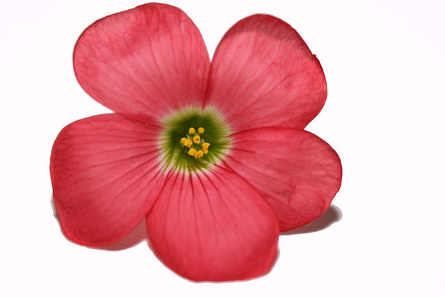

A flower, sometimes known as a bloom or blossom, is the reproductive structure found in flowering plants (plants of the division Angiospermae). The biological function of a flower is to facilitate reproduction, usually by providing a mechanism for the union of sperm with eggs. Flowers may facilitate outcrossing (fusion of sperm and eggs from different individuals in a population) resulting from cross-pollination or allow selfing (fusion of sperm and egg from the same flower) when self-pollination occurs.
Morphology
The morphology of a flower, or its form and structure,[4] can be considered in two parts: the vegetative part, consisting of non-reproductive structures such as petals; and the reproductive or sexual parts. A stereotypical flower is made up of four kinds of structures attached to the tip of a short stalk or axis, called a receptacle. Each of these parts or floral organs is arranged in a spiral called a whorl.[5] The four main whorls (starting from the base of the flower or lowest node and working upwards) are the calyx, corolla, androecium, and gynoecium. Together the calyx and corolla make up the non-reproductive part of the flower called the perianth, and in some cases may not be differentiated. If this is the case, then they are described as tepals.